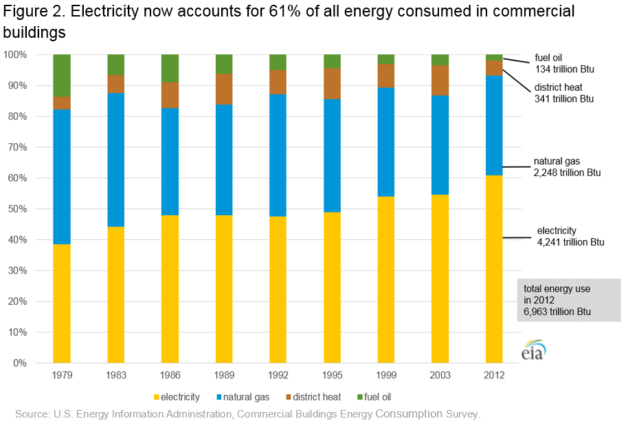

2012 Commercial Buildings Energy Consumption Survey: Energy Usage Summary
CBECS 2012 - Release date: March 18, 2016
Despite a 14% increase in total buildings and a 22% increase in total floorspace since 2003, energy use in the estimated 5.6 million U.S. commercial buildings was up just 7% during the same period, according to new analysis from the 2012 Commercial Buildings Energy Consumption Survey (CBECS).
Slower growth in commercial building energy demand since 2003 is explained in part by newer construction that is built to higher energy performance standards, occupied by less energy intensive building activities, and more often built in temperate regions. (See the 2012 CBECS Building Characteristics results.) The improved efficiency of key energy-consuming equipment is also decreasing demand. Since 2003, for example, space heating and lighting are each down by 11 percentage points in their share of energy use in buildings.
The 2012 CBECS was a multi-year effort that began with constructing a comprehensive list of commercial buildings, selecting a statistically representative sample from that list, and conducting 6,720 interviews onsite across the United States. Results from the building interviews released about a year ago were combined with energy consumption data provided by building respondents or their energy suppliers and NOAA weather data to model how energy is consumed within buildings. Through CBECS and these modeling efforts, EIA is able to provide the only comprehensive source of detailed information on energy use in the wide variety of commercial buildings across the United States. To learn more, see How was energy usage information collected in the 2012 CBECS?
These tables and graphs provide an overview of the consumption estimates. Detailed tables and public use microdata files will be released within a couple months.
2012 CBECS energy consumption summary tables:
Results from the CBECS show that in 2012, U.S. commercial buildings used 6,963 trillion Btu of total site energy1: 4,241 trillion British thermal units (Btu) of electricity, 2,248 trillion Btu of natural gas, 134 trillion Btu of fuel oil (in CBECS reports, the fuel oil designation includes distillate fuel oil, diesel, and kerosene2), and 341 trillion Btu of district heat (steam or hot water from a utility or from a campus central plant). Electricity and natural gas usage increased by 19% and 7%, respectively, since 2003, the last year for which CBECS results are available, while fuel oil and district heat usage decreased by 41% and 46%, respectively. Overall, total energy usage in commercial buildings increased 7% since 2003 (Figure 1).
Total electricity consumption in commercial buildings has almost doubled since CBECS began tracking it. Electricity consumption increased from slightly more than 2,200 trillion Btu in 1979 to 4,241 trillion Btu in 2012; this change is statistically significant. Total natural gas consumption decreased between 1979 and 1986 but then remained close to its 1979 level through 2012. The change in total natural gas consumption from 1979 to 2012 is not statistically significant.

Electricity and natural gas have been, and continue to be, the two dominant energy sources in the commercial buildings sector. Together electricity and natural gas accounted for about 93% of total energy consumed in 2012 (Figure 2). Along with the increase in total electricity consumption, electricity increased its share of total energy consumed from 38% in 1979 to 61% in 2012. The share of natural gas used was larger than 40% in both 1979 and 1983, remained in the mid to upper 30% range in remainder of the 1980s and the 1990s, and was at 32% in both 2003 and 2012. Fuel oil’s share of total energy was 2% in 2012, its smallest amount since CBECS began collecting data.
The increases in the total amount and share of electricity consumed in commercial buildings over the years is consistent with the adoption of new types of electronic equipment and the increased use of existing technologies such as computers and servers, office equipment (printers, copiers, and fax machines), telecommunications equipment, and medical diagnostic and monitoring equipment. In addition to electricity consumed directly by the equipment, many of these electronics require additional cooling, humidity control, and/or ventilation equipment that also increases electricity consumption.

The average total energy used per square foot of commercial buildings showed a statistically significant decrease since the 2003 CBECS, from 91.0 thousand Btu per square foot to 80.0 thousand Btu per square foot (Figure 3). The average electricity use per square foot remained about the same since 2003, but decreased for natural gas. The decrease in natural gas energy intensity is likely related to federal equipment standards over that time period and warmer-than-average winter months of the survey year 2012.

CBECS classifies structures by principal building activity. For most building types, there was not a statistically significant change in the average energy use per square foot by building type. The exception was office and education buildings, which did show a small decrease in average total energy use per square foot (Figure 4).
Food service, inpatient health care (hospitals), and food sales buildings are the most intensive users of total energy among the building types. Food service buildings tend to be small but use relatively large amounts of energy for cooking and refrigeration. The food sales category, which includes convenience stores, is also composed of many small buildings that are often operated for long hours and use a lot of refrigeration. Hospital energy use is high because of around-the-clock demand for all end uses and because of a wide variety of specialized, energy intensive equipment such as medical imaging equipment.

Total energy use from the CBECS data is divided into end uses through statistically-adjusted engineering models. See Estimation of Energy End-use Consumption for more information about the modeling process. These models estimate end uses for electricity, natural gas, fuel oil, and district heat. For these four energy sources combined, CBECS produces estimates for ten end-use categories: space heating, cooling, ventilation, water heating, lighting, cooking, refrigeration, computing, office equipment, and other use, which includes motors, pumps, air compressors, process equipment, backup electricity generation, and miscellaneous appliances and plug-load. The largest end-use share of total energy in 2012 was for space heating, followed by the other category (Figure 5).
Since the 2003 CBECS, the shares of energy used for space heating and for lighting in commercial buildings have each decreased by 11 percentage points. Increased shares are estimated for cooking, refrigeration, computing (including servers), and other, each of which was up by 4 percentage points compared to 2003.
The total amount of energy used for lighting has decreased 46% from 2003 to 2012 (Figure 6), a change in large part due to the increasing use of compact fluorescent and LED bulbs as replacements for lower efficiency incandescent bulbs. The total amount of energy used for space heating decreased 26% from 2003 to 2012, likely because of the warmer than average winter during the reference year (2012) and federal equipment standards.


{kind=link}